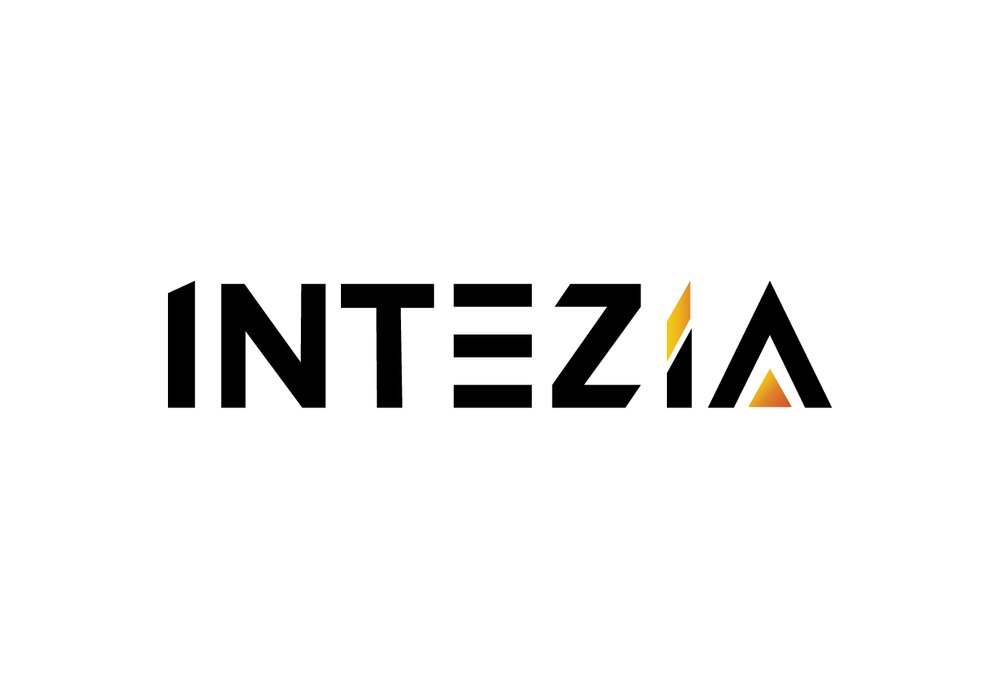

Propuesta de proyecto · Servicio de Detección
Mapa de oportunidades de IA
para automatizar procesos
en 4 áreas de Orionis
Nivelamos a los líderes en IA, auditamos las 4 áreas de Orionis y dejamos logros inmediatos y la ruta para pasar de detectar a construir.
02 · Alcance
Auditamos cada área y dejamos logros inmediatos.
Revisamos proceso por proceso cómo trabaja cada área y qué puede automatizar la IA, con quien hace el trabajo.
Qué auditamos
Qué miramos en cada proceso
- Pasos del proceso
- Información que usa
- Herramientas y sistemas
- Información sensible
- Dónde se hace a mano
- Quién lo hace
Recorremos cómo se trabaja hoy en cada área para ver qué se puede automatizar con IA. Otras áreas pueden sumarse en una segunda fase.
Para qué
- Ver la operación realCómo trabaja hoy cada área y qué tareas se hacen a mano.
- Mejorar desde yaLogros inmediatos que cada área usa mientras avanza el levantamiento.
- Elegir qué automatizarLos procesos ordenados por impacto y esfuerzo, con la ruta para construirlos.
- Cuidar la informaciónQué datos no entran a la IA se define al inicio, junto con Orionis.
Fuera de este alcance
- Licencias de IA: la recomendación va en el Informe Final y no están en la inversión.
- Cambios en sus sistemas: se revisan en el levantamiento y no se modifican.
- Construir y poner en uso las automatizaciones: es la fase que sigue (Habilidades).

Orionis · DET-04403 · Ruta
Del arranque al Informe Final, en cinco etapas.
El calendario y el orden de las conversaciones se acuerdan en la reunión de arranque.
Reunión de arranque: alcance, responsables de cada área, reglas para la información y calendario.
2 horas de Fundamentos de IA para los líderes de las cuatro áreas, en un solo grupo.
Una conversación con cada área, con su líder y las personas clave.
16 horas de levantamiento, repartidas según lo que necesite cada área.
Intezia cruza lo levantado y ordena qué automatizar primero, por impacto y esfuerzo.
Diagnóstico, hoja de ruta hacia la implementación y licencias, presentados a los líderes.
La ruta completa de Orionis
Mapa de oportunidades, logros inmediatos y la ruta para automatizar.
Se construyen con el equipo las soluciones priorizadas, área por área.
Se suman al mismo mapa, con su propio levantamiento.
04 · Cómo trabajamos
Así trabajamos con cada área.
Nos sentamos con cada área y salimos de cada conversación con algo concreto.
- EntrevistamosAl líder de cada área y a las personas clave.
- MapeamosSus procesos, la información, los sistemas y los cuellos de botella.
- ConstruimosUn logro inmediato en el momento, cuando el proceso lo permite.
- PriorizamosCada oportunidad en el Mapa de Calor, con su camino a la implementación.
Por qué en este orden Primero se nivela a los líderes con fundamentos. Después se levanta área por área. Al final se prioriza con la foto completa.
Quién construye Intezia levanta y construye junto a cada área, con las herramientas que Orionis autorice. Sus sistemas no se modifican.
Cómo funciona en la práctica
- Sin tarea previa. Nadie prepara nada antes de su turno: todo se levanta en la conversación.
- Un espacio por área. Cada área se levanta por separado: lo de una no se conversa en la mesa de otra.
- Sin forzar soluciones. Si un proceso exige mucho esfuerzo, no se resuelve en el momento: pasa al Mapa de Calor con su prioridad.
Cómo cuidamos sus datos
Áreas como Fraudes manejan información sensible. Trabajamos con los ejemplos que Orionis autoriza, sin datos reales de clientes ni de casos, y nada confidencial entra a la IA sin su visto bueno.
05 · Entregables
Lo que recibe Orionis.
Lo que se llevan: un diagnóstico para decidir, mejoras que ya funcionan y una hoja de ruta para seguir.
Acordados en el arranque: el orden de las áreas, el calendario y las reglas para cuidar la información.
2 horas de fundamentos: qué es y qué no es la IA, cómo pedirle bien y qué información cuidar.
Al menos tres, a evaluar en el levantamiento, con las herramientas que Orionis autorice.
Las oportunidades de las cuatro áreas en un solo mapa, por impacto y esfuerzo, con su camino a la implementación.
Qué automatizar primero, tareas por área y los pasos para pasar a construirlo.
Qué herramientas de IA conviene y de qué tipo, con datos de sus propias áreas.
06 · Retorno
Retorno esperado: decidir con datos.
El Informe Final estima el retorno de cada oportunidad con lo que cuenta cada área.
Cómo se estima el retorno de cada oportunidad
- VolumenCuántas veces al mes se repite cada tarea del área.
- Tiempo actualLo que toma hoy cada vez, según quien hace el trabajo.
- Tiempo con la soluciónLa estimación de Intezia para cada oportunidad del Mapa de Calor.
- Horas recuperablesVolumen por la diferencia de tiempos: una estimación de referencia, no un compromiso de resultado.
- PrioridadImpacto, esfuerzo y riesgo de cada oportunidad, para decidir por dónde empezar.
Qué decide Orionis con el Informe Final
Cuáles adquirir, cuáles no y para qué puestos.
Qué procesos mejorar primero y con qué tipo de solución.
Qué herramienta usa cada puesto y qué información puede salir de cada área.
Hacia dónde va Orionis
Cada oportunidad por impacto y esfuerzo, para decidir por dónde empezar.
Cada recomendación respeta lo que Orionis autoriza usar con IA.
Con el mapa, Habilidades arranca con claridad en las áreas que elijan.
Con el Informe Final, Orionis sabe qué procesos conviene automatizar primero, con qué herramientas y cómo pasar a construirlos, con datos de sus propias áreas.
Inversión del proyecto.
Propuesta Económica · Servicio de Detección
Reunión de arranque, 2 horas de Fundamentos de IA y 16 horas de levantamiento en 4 áreas.
Cotización válida por 30 días.
Este servicio se presta bajo nuestros términos y condiciones. Al avanzar con esta propuesta, ambas partes los aceptan.
08 · Próximos pasos
Tres pasos para arrancar.
Esto es lo que sigue cuando Orionis confirme la propuesta.
Presentamos el esquema y levantamos lo que falta: procesos, equipos y herramientas de cada área.
Con lo levantado, dejamos el alcance por áreas, incluidas las que se sumen.
Una hora para cerrar el orden de las áreas, las reglas para la información y el calendario.
+58 414 5756615